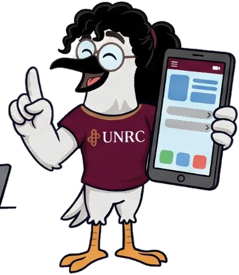

Parte del proyecto Ecosistemas Digitales del maestro Pablo Adrian Rivera Juvenal. Una selección de herramientas de IA para estudiar, crear y analizar; cada tarjeta te lleva al sitio oficial.
Herramientas
Herramientas de inteligencia artificial de acompañamiento pedagógico

Parte del proyecto Ecosistemas Digitales del maestro Pablo Adrian Rivera Juvenal. Una selección de herramientas de IA para estudiar, crear y analizar; cada tarjeta te lleva al sitio oficial.
Herramientas